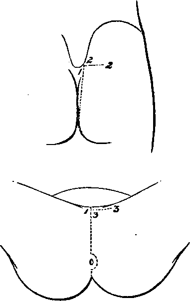

A Dissection To Expose The Pudic Artery
Description
This section is from the book "A Manual Of Dissections Of The Human Body", by R. E. Carrington. Also available from Amazon: A manual of dissections of the human body.
A Dissection To Expose The Pudic Artery
Position
The body in the lithotomy position, but the buttocks raised higher than usual by blocks beneath the Lumbar region. The side on which the dissection is to be made tilted higher than the opposite. The Scrotum should be hooked forwards on to the Abdomen. In this way, the side of the buttock, the Ischio-rectal fossa, and the Perinæum may be seen in one view.
I. Skin Incisions
1. From the posterior superior Iliac spine vertically downwards to the tip of the Coccyx, then forwards encircling the anus and along the median raphe of the Perinæum to the base of the Scrotum.
2. A transverse incision outwards for three inches from the upper and posterior end of No. 1.
3. A transverse incision outwards for two inches from the anterior end of No. 1.
Reflect the flap outwards and expose the superficial fascia. Over the Perinæum this consists of two layers, of which the superficial is now seen.
The following structures in their order, from before backwards, are also displayed.
1. Cutaneous arteries from— a. The Superficial Perineal branch of the Pudic.
b. The Inferior Hæmorrhoidal over the Ischiorectal fossa, and a branch turning round the edge of the Gluteus maximus muscle.
No. 17.
c. The Sciatic artery over the Gluteus maximus muscle, some offsets turning round the lower border, others perforating the muscle. The ending of the Coccygeal branch.
d. The Gluteal passing through the Gluteus maximus muscle.
2. At the back of the Ischio-rectal fossa, an offset of the Inferior Hæmorrhoidal branch of the Pudic nerve, turning round the Gluteus muscle ; and:
3. Branches of the Small Sciatic nerve external to it, and having a similar distribution.
4. The Hæmorrhoidal branch of the fourth Sacral nerve in the angle between the Gluteus maximus and External Sphincter ani muscles.
5. The Coccygeal nerve close to the Coccyx.
6. The external branches of the posterior primary divisions of the upper three Sacral nerves, the smallest near the Iliac crest, the largest opposite the lower end of the Sacrum, the other by the side of the Coccyx.
7. Twigs passing backwards over the upper and posterior part of the space dissected, from the external branches of the posterior primary divisions of the upper three Lumbar nerves as they pass over the Iliac crest.
II
a. Take away in front the superficial layer of the superficial fascia of the Perineum.
b. Clean out the fat from the Ischio-rectal fossa, and remove the sheath of the Obturator fascia enclosing the Pudic vessels and nerve.
c. Remove the fascia lata from the Gluteus maximus muscle behind. While these steps are being taken, the following structures will be seen:—
In Front Over The Perinaeum
1. The Rami of the Pubes and Ischium.
2. The Superficial Perineal vessels running up to the Scrotum.
3. The Anterior and Posterior Superfcial Perinæal nerves, the latter external to the other. These nerves communicate freely with one another.
4. More externally the Inferior Pudendal branch of the Small Sciatic nerve. It communicates with the Posterior, or External Superficial Perinæal nerve.
Bounding the Ischio-rectal Fossa the following Structures will be found—
5. Internally
The External Sphincter ani muscle, below it the Levator ani muscle covered by the Anal fascia, and the Coccygeus muscle. The latter posterior to the Levator ani.
6. Externally
The Tuber Ischii and below it the Obturator fascia covering in the Obturator internus muscle, forming the outer wail.
7. Posteriorly
The inferior border of the Gluteus maximus muscle.
Contained in the Ischio-rectal Fossa the following Structures will be dissected—
8. In a sheath of the Obturator fascia, one and a half inches deep on the outer wall, the Pudic vessels. The Inferior Hæmorrhoidal branches are traceable transversely across the space to the lower end of the Rectum, and the Superficial Perineal vessels backwards to their origin from the Pudic. Crossing the front of the fossa is the small Transverse Perineal artery, which may be a branch of the main trunk, but more commonly arises from the Superficial Perineal branch.
9. The Pudic nerve will be found in the outer wall of the fossa deeper than the artery, but its Perineal branch, which is considerably larger than the nerve itself, is superficial to the vessel. This branch will be found to be dividing in front into offsets, which may be better traced in a subsequent dissection. Opposite the Tuber Ischii the Inferior Hæmorrhoidal branches of the main nerve pass inwards to the lower end of the Rectum, and communications with the Posterior Superficial Perineal and Inferior Pudendal nerves may now be followed forwards.
10. The Hæmorrhoidal branch of the fourth Sacral nerve may be seen passing between the Levator ani and Coccygeus muscles, or perforating the latter to be distributed to the External Sphincter muscle.
On the Buttock—
11. The Gluteus maximus muscle will be cleaned, and the previously mentioned branches of the Sacral nerves will be found perforating it.
Continue to:
- prev: A Dissection To Expose The Anterior Surface Of The Sacral Plexus In The Male Subject
- Table of Contents
- next: A Dissection To Expose The Pudic Artery. Continued